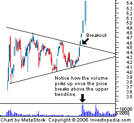

A chart pattern used in technical analysis that is easily recognized by the distinct shape created by two converging trendlines. The pattern is identified by drawing two trendlines that connect a series of sequentially lower peaks and a series of sequentially higher troughs. Both trendlines act as barriers that prevent the price from heading higher or lower, but once the price breaches one of these levels, a sharp movement often follows.
A symmetrical triangle is generally regarded as a period of consolidation before the price moves beyond one of the identified trendlines. A break below the lower trendline is used by technical traders to signal a move lower, while a break above the upper trendline signals the beginning of a move upward. As you can see from the chart above, technical traders use a sharp increase in volume or any other available technical indicator to confirm a breakout beyond one of the trendlines.
The sharp price movement that often follows a breakout of this formation can be captured by traders who are able to identify the pattern early enough.
{kind=link}